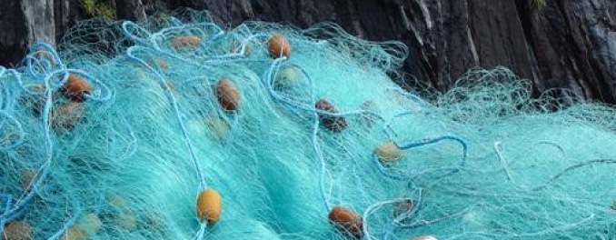

Organic Cotton

No. EC0001
 No. EC0001
No. EC0001
Organic Cotton
Organic cotton is grown using methods and materials that have a
low impact on the environment. Organic production systems
replenish and maintain soil fertility, reduce the use of toxic
and persistent pesticides and fertilizers, and build
biologically diverse agriculture. Third-party certification
organizations verify that organic producers use only methods and
materials allowed in organic production.
Organic cotton is grown without the use of toxic and persistent pesticides and synthetic fertilizers. In addition, federal regulations prohibit the use of genetically engineered seed for organic farming.
Organic cotton is grown without the use of toxic and persistent pesticides and synthetic fertilizers. In addition, federal regulations prohibit the use of genetically engineered seed for organic farming.
See Examples
call_made
Organic Hemp

No. EC0002
 No. EC0002
No. EC0002
Organic Hemp
Hemp, or industrial hemp, is a botanical class of Cannabis
sativa cultivars grown specifically for industrial or medicinal
use. It can be used to make a wide range of products.
Along with bamboo, hemp is among the fastest growing plants on Earth. It was also one of the first plants to be spun into usable fiber 50,000 years ago. It can be refined into a variety of commercial items, including paper, rope, textiles, clothing, biodegradable plastics, paint, insulation, biofuel, food, and animal feed.
Along with bamboo, hemp is among the fastest growing plants on Earth. It was also one of the first plants to be spun into usable fiber 50,000 years ago. It can be refined into a variety of commercial items, including paper, rope, textiles, clothing, biodegradable plastics, paint, insulation, biofuel, food, and animal feed.
See Examples call_made
Organic Linen

No. EC0003
 No.
EC0003
No.
EC0003
Organic Linen
Linen is very strong, absorbent, and dries faster than cotton.
Because of these properties, linen is comfortable to wear in hot
weather and is valued for use in garments. It also has other
distinctive characteristics, notably its tendency to wrinkle.
Linen textiles appear to be some of the oldest in the world; their history goes back many thousands of years.
Linen textiles appear to be some of the oldest in the world; their history goes back many thousands of years.
See Examples call_made
Organic Bamboo

No. EC0004
 No.
EC0004
No.
EC0004
Organic Bamboo
When bamboo is harvested, it can be done without killing the
plant itself. That means that bamboo can renew suuuuper quickly
(it’s one of the fastest growing plants on the planet). Like
hemp, bamboo consumes more CO2 than some trees. It doesn’t
require a lot of inputs and can survive on rainfall alone.
Organic bamboo can be turned into one of the one of the most sustainable fabrics — but that doesn’t mean it always is. Depending on how it’s processed, it could involve chemically intensive processes — and all the harmful impacts that come with it.
Organic bamboo can be turned into one of the one of the most sustainable fabrics — but that doesn’t mean it always is. Depending on how it’s processed, it could involve chemically intensive processes — and all the harmful impacts that come with it.
See Examples call_made
Cork
No. EC0005
No. EC0005
Cork
Cork fabric has left the board and the bottle to make it onto
our bodies. The material has become a popular one for vegan bags
and shoes… and for good reason.
Cork is sustainably harvested from a cork oak (yes, it’s from a tree) by simply shaving away the bark. In fact, Quercus suber can be harvested—and should be harvested—to extend its life.
Cork is sustainably harvested from a cork oak (yes, it’s from a tree) by simply shaving away the bark. In fact, Quercus suber can be harvested—and should be harvested—to extend its life.
See Examples call_made
Pinatex
No. EC0006
No. EC0006
Pinatex
Piñatex is a non-biodegradable leather alternative made from
cellulose fibres extracted from pineapple leaves, PLA
(polylactic acid), and petroleum-based resin.
Piñatex was developed by Dr Carmen Hijosa and first presented at the PhD graduate exhibition at the Royal College of Art, London. It’s essentially a food byproduct, made from scrap pineapple leaves that are otherwise burned. It reduces waste and can biodegrade naturally even when frequently combined with wood-based PLA.
Piñatex was developed by Dr Carmen Hijosa and first presented at the PhD graduate exhibition at the Royal College of Art, London. It’s essentially a food byproduct, made from scrap pineapple leaves that are otherwise burned. It reduces waste and can biodegrade naturally even when frequently combined with wood-based PLA.
See Examples call_made
Scoby Leather

No. EC0007
 No.
EC0007
No.
EC0007
Scoby Leather
SCOBY-based leather obviously doesn’t require animals, is
biodegradable, requires zero heavy metals and other tanning
chemicals, and is significantly cheaper than genuine leather,
too.
Kombucha is fermented using a material of live cultures called SCOBY (Symbiotic Culture of Bacteria and Yeast), and that same mushy gob of bacteria can be turned into leather. Laid on a mold, the SCOBY leather dries, fast forward a few steps and you’re left with tea-based vegan shoes, wallets, and clothes.
Kombucha is fermented using a material of live cultures called SCOBY (Symbiotic Culture of Bacteria and Yeast), and that same mushy gob of bacteria can be turned into leather. Laid on a mold, the SCOBY leather dries, fast forward a few steps and you’re left with tea-based vegan shoes, wallets, and clothes.
See Examples call_made
Apple Leather

No. EC0008
 No.
EC0008
No.
EC0008
Apple Leather
Apple leather, also known as AppleSkin, is a bio-based material
made using the leftover pomace and peel from the fruit juice and
compote industry.
Originating from the region of Bolzano in northern Italy, the fabric is created by first taking the recovered apple waste and reducing it to a powder. Once processed, it is sent to a factory located in Florence, where it is combined with polyurethane and coated onto a cotton and polyester canvas.
Originating from the region of Bolzano in northern Italy, the fabric is created by first taking the recovered apple waste and reducing it to a powder. Once processed, it is sent to a factory located in Florence, where it is combined with polyurethane and coated onto a cotton and polyester canvas.
See Examples call_made
Woocoa
No. EC0009
No. EC0009
Woocoa
Alternative plant-based wools have taken the world by storm,
including this one — made from hemp, coconut fibers, and
mushroom enzymes. This vegan wool is not only animal-friendly,
but is also sustainable.
Woocoa is a biofabricated wool that is a hygroscopic, thermal, and antimicrobial fiber obtained from medicinal marijuana waste. The fiber is durable, easy-to-dye, environmentally friendly also flexible, elastic, and wicks away humidity. Its produced under a circular and regenerative process. Other bio-products are biobricks and biopackaging.
Woocoa is a biofabricated wool that is a hygroscopic, thermal, and antimicrobial fiber obtained from medicinal marijuana waste. The fiber is durable, easy-to-dye, environmentally friendly also flexible, elastic, and wicks away humidity. Its produced under a circular and regenerative process. Other bio-products are biobricks and biopackaging.
See Examples call_made
QMilk
No. EC0010
No. EC0010
QMilk
QMilk has been self-proclaimed to be the “material of the
future.” And maybe it is! It sure sounds pretty futuristic.
The material uses casein, a milk protein sourced as a byproduct of the dairy industry, to make a fabric that’s natural, compostable, flame retardant, and silky smooth.
The material uses casein, a milk protein sourced as a byproduct of the dairy industry, to make a fabric that’s natural, compostable, flame retardant, and silky smooth.
See Examples call_made
Econyl
No. EC0011
 No. EC0011
Econyl
Econyl is a trademark of the Italian plastics company Aquafil.
This company has also produced a variety of other textiles and
industrial plastics, but it is most well-known for developing
Econyl fabric. Inspired by the environmental crisis caused by
synthetic fibers, the creators of Econyl sought to devise an
alternative to nylon that doesn’t harm ecosystems.
See Examples call_made
Silk
No. EC0012
No. EC0012
Silk
The strongest natural protein fibre composed mainly of Fibroin,
silk is a shimmering textile known for its satin texture and
famous for being a luxurious fabric.
The most common silk is produced from silkworms, small creatures which mostly live on mulberry leaves. The protecting cocoon created around themself is harvested and used for silk production.
The global average of silk production accounts for 80,000 tons per year, of which approximately 70% is produced in China.
The most common silk is produced from silkworms, small creatures which mostly live on mulberry leaves. The protecting cocoon created around themself is harvested and used for silk production.
The global average of silk production accounts for 80,000 tons per year, of which approximately 70% is produced in China.
See Examples call_made